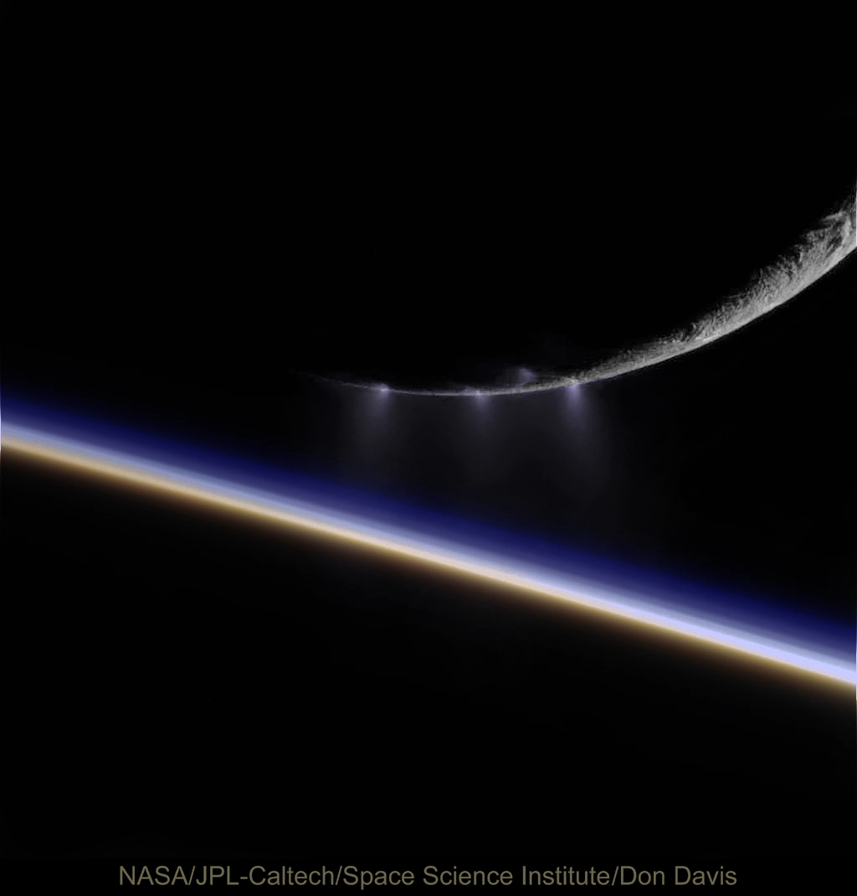

Life as we know it requires water, energy, and organic molecules. Enceladus, Saturn’s icy moon, shows promise in all these areas. Could a mission to this distant world reveal signs of life? Let’s dive into the possibilities and challenges of such a mission.

Enceladus: A Promising Candidate for Extraterrestrial Life?
Biology states that life needs three main ingredients: liquid water, energy, and the right conditions for complex organic molecules to form. Surprisingly, Enceladus, one of Saturn’s moons, seems to tick all these boxes. When the Cassini spacecraft flew through plumes of water vapor ejected from Enceladus’ icy surface, it found signs that this distant world might just harbor life. So, the big question is: Should we launch a mission to Enceladus to search for life?
Why Enceladus?
Cassini’s flybys revealed something extraordinary: high levels of methane in the plumes spewing from Enceladus’ subsurface ocean. Here on Earth, such methane is often produced by microbes. This raises an exciting possibility: Could microbes be living on Enceladus, producing this methane? It’s a tantalizing thought that demands further investigation. The Science Behind the Mission
To explore this possibility, a proposed mission would focus on detecting cell-like structures and measuring the abundance of organic materials in the plumes. This approach would help determine whether the methane on Enceladus is of biological origin or simply a result of non-living processes.
To achieve this, scientists plan to collect and analyze samples directly from the plumes. The mission would involve multiple fly-throughs to gather enough data, ensuring that the findings are robust and reliable. Cutting-Edge Technology
Recent technological advancements make this mission feasible. For instance, silicate aerogels can decelerate ice grains and droplets without destroying them, making it easier to analyze the samples. These innovations are crucial for studying the delicate structures that could indicate life. NASA’s Vision
NASA’s strategic plan includes the goal of searching for life beyond Earth. The Science Mission Directorate has outlined objectives to explore the solar system for signs of life, and Enceladus stands out as a prime candidate. The recent Planetary Science and Astrobiology Decadal Survey strongly recommends a mission to Enceladus, particularly one that involves multiple flybys to maximize the chances of detecting biosignatures. Why Now?
The compelling evidence from Cassini’s mission, combined with new technologies, makes this the perfect time to follow up with a dedicated mission to Enceladus. Such a mission would not only enhance our understanding of this intriguing moon but could also answer one of humanity’s most profound questions: Are we alone in the universe? Mission Design
The proposed mission would leverage multiple flybys to sample the plumes of Enceladus’ cryovolcanoes. This approach avoids the risks associated with landing or drilling, making it a more practical and efficient way to study the moon’s subsurface ocean. The mission’s objectives and instruments would be specifically tailored to detect methanogenic life, if it exists. Conclusion: A New Frontier in Space Exploration
A mission to Enceladus represents a significant leap in our quest to find life beyond Earth. By carefully designing the mission to maximize scientific output and minimize risks, we stand a good chance of uncovering the secrets of this icy moon. The time is ripe for such an endeavor, with current technologies ready to meet the challenge.
So, should we launch a mission to Enceladus to search for life? The evidence and potential rewards suggest a resounding yes. This mission could not only revolutionize our understanding of Enceladus but also bring us closer to answering the age-old question of whether life exists elsewhere in the universe.
What do you think? Is Enceladus the next frontier in our search for extraterrestrial life? Share your thoughts and join the conversation!